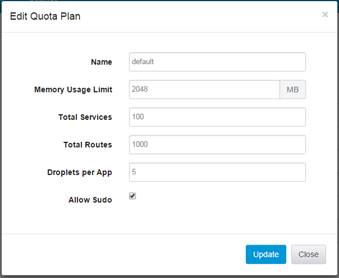
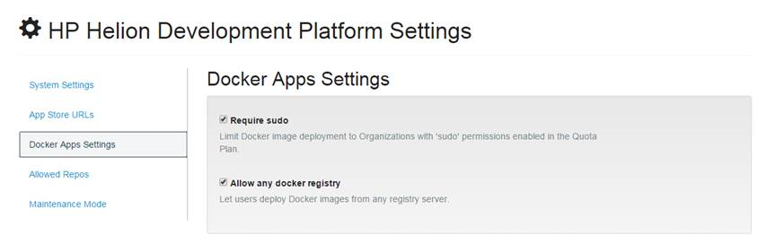

For security, Docker container deployments are disabled. You can enable container deployment
in two ways:
- Add sudo permissions to users within an organization
- Disable sudo requirement for Docker apps
To Add sudo Permission for All Users
- Open the Helion Management Console.
- Click .
- Click a quota plan and then click Edit Quota.
- Check the Allow Sudo checkbox and then click
Update.

- For the setting to take effect, restart any apps running under the quota plan.
To Remove sudo Requirement for Docker App Deployment
- Open the Helion Management Console.
- Click .
- On the left panel, lick Docker Apps Settings.
- Uncheck the Require Sudo checkbox.
